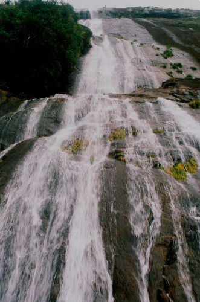
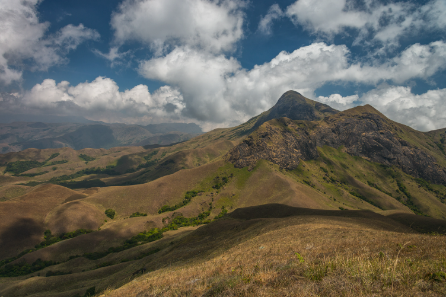
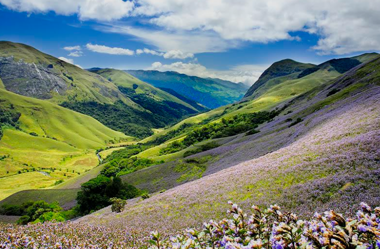
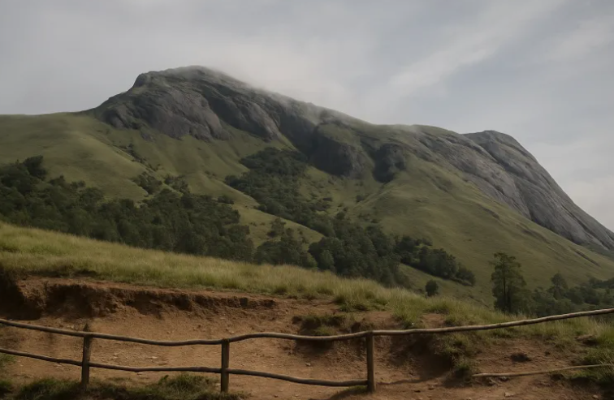
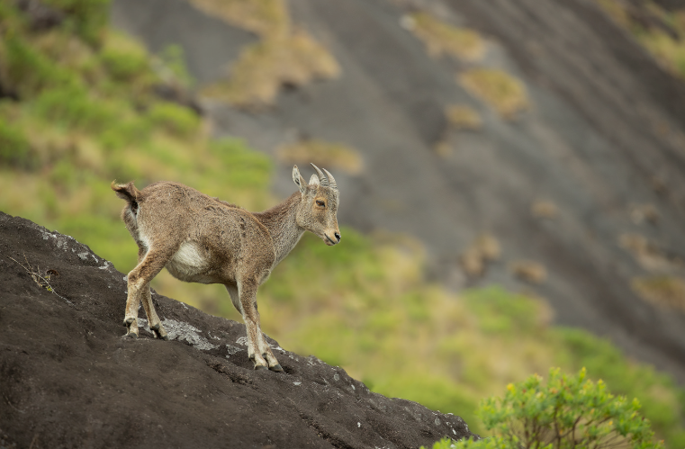

Anamudi Peak is the highest mountain in South India, with an elevation of 2,695 metres above sea level. It is located inside Eravikulam National Park near Munnar in Idukki district, Kerala. The name "Anamudi" means "Elephant's Forehead" because the shape of the mountain resembles the forehead of an elephant. The peak is surrounded by rolling grasslands, shola forests, and rich biodiversity.
Anamudi is home to many rare plants and animals, including the endangered Nilgiri Tahr. The breathtaking scenery, cool climate, and panoramic views make it one of the most popular attractions in Munnar. Trekking to the peak is restricted to protect the fragile ecosystem, but visitors can enjoy magnificent views of Anamudi from Eravikulam National Park.





Anamudi Peak is the highest mountain in South India, located in Eravikulam National Park near Munnar in Idukki District, Kerala. It rises to an elevation of 2,695 metres (8,842 feet) above sea level. The peak is famous for its breathtaking scenery, rich biodiversity, rolling grasslands and rare wildlife. It is one of the most important natural landmarks of the Western Ghats.
The name "Anamudi" comes from the Malayalam words "Ana" (Elephant) and "Mudi" (Forehead or Peak). The mountain is named because its summit resembles the forehead of an elephant.
Anamudi has been part of the Western Ghats for millions of years. It became internationally famous after the establishment of Eravikulam National Park in 1978. Today, the peak is protected because of its unique ecosystem and endangered wildlife.
Anamudi Peak offers spectacular mountain views, rolling grasslands, shola forests and rich biodiversity. Visitors enjoy trekking in permitted areas, wildlife watching, photography and scenic landscapes. Direct trekking to the summit is restricted to protect the fragile ecosystem.
The mountain is covered with shola forests, grasslands, medicinal plants and rare flowering species. The famous Neelakurinji flower blooms once every twelve years, covering the surrounding hills with blue flowers.
Today, Anamudi Peak is one of India's most important eco-tourism destinations. It is famous for its rich biodiversity, conservation of the Nilgiri Tahr and its status as the highest peak in South India. Thousands of tourists visit the nearby Eravikulam National Park every year to enjoy its spectacular scenery.